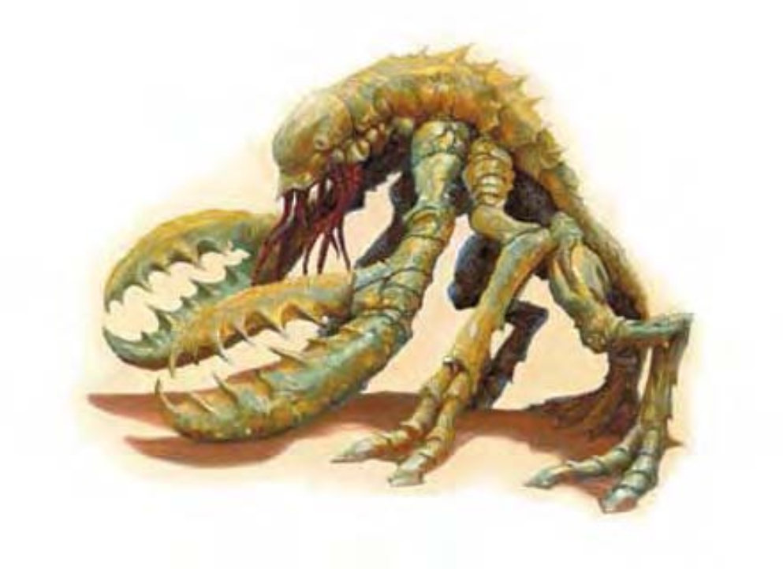

| 资料栏位 | 甲伏怪 (Chuul) 大型异怪 (水生) |
|---|---|
| 生命骰 | 11d8+44 (93hp) |
| 先攻 | +7 |
| 速度 | 30英尺 (6格)，游泳20英尺 |
| 防御等级 | 22 (-1体型，+3敏捷，+10天生)，接触12，措手不及19 |
| 基本攻击/擒抱 | +8 / +17 |
| 攻击 | 爪抓+12近战 (2d6+5) |
| 全力攻击 | 2爪抓+12近战 (2d6+5) |
| 占据/触及 | 10英尺 / 5英尺 |
| 特殊攻击 | 紧勒 3d6+5，精通攫抓，麻痹触须 |
| 特殊能力 | 两栖，黑暗视觉60英尺，免疫毒素 |
| 豁免 | 强韧+7，反射+6，意志+9 |
| 属性 | 力量20，敏捷16，体质18，智力10，感知14，魅力5 |
| 技能 | 躲藏+13，聆听+11，侦察+11，游泳+13 |
| 专长 | 警觉，盲斗，战斗反射，精通先攻 |
| 区域 | 温带沼泽 |
| 组织 | 单独，成对，或成群 (3-5) |
| 挑战等级 | 7 |
| 宝藏 | 1/10钱币；50%商品；标准物品 |
| 阵营 | 通常混乱邪恶 |
| 进化 | 12-16HD (大型) ; 17-33HD (超大型) |
| 等级调整 | ― |
仿佛某种大型昆虫或是甲壳类生物，当它从平静的水池中浮出水面，当火把照过它斑驳的、装甲一般的甲壳反射出光线时，它钳状的尖爪带着愤怒不断开合，咔嗒作响。当它浮出水面时，小而漆黑的眼睛饱含饥饿的凝视牢牢地锁定在你身上，从嘴部垂下的触须则在兴奋之中蠕动。
甲伏怪是混合有甲壳纲动物、昆虫与蟒蛇特征的恐怖生物，这种令人讨厌的家伙经常潜伏在水底或是水面附近，等待智慧生物自投罗网。
尽管属于两栖生物，甲伏怪并不善于游泳，因此偏好从陆地上或是很浅的水里发动攻击。它们乐衷于捕食蜥蜴人。甲伏怪有从死亡敌人身上搜集战利品的习惯。它们无法使用武器、防具或其他物品，但其巢穴里却存了一堆。若敌人身上没什么甲伏怪感兴趣的东西，它们就会取走他们的头骨。
甲伏怪大多住在沼泽、丛林里，但某些甲伏怪适应了地下生活，在地底溪流或湖附近觅食。这类地底种群通常以捕食战蜥人和缺乏的卓尔为生。眼魔或夺心魔偶尔将甲伏怪养作奴仆。甲伏怪大约有 8 英尺长，体重可达 650 磅。甲伏怪说通用语（地底种群则说地底通用语）。
战斗甲伏怪喜欢待在岸边，潜伏在阴暗的水里，当它听到附近有猎物经过时（进入或离开水里）再用突袭来攻击对方。甲伏怪会用爪子擒抱并且紧勒一名敌人，再将其送到麻痹触须可触及的位置。甲伏怪会尽量让一只爪子空着，因此当它面对一大群敌人时，会先把麻痹或死掉的受害者丢在一边，继续用爪子擒抱、紧勒并麻痹其它对手。
紧勒 (Constrict, Ex)：一旦通过擒抱检定，甲伏怪将造成 3d6+5 点伤害。
精通攫抓 (Improved Grab, Ex)：要使用此能力，甲伏怪必须先用它的爪抓攻击命中对手。之后它可以在一个即时动作尝试擒抱而不会引发借机攻击。如果通过擒抱检定，它可以进行定身并可以紧勒，或者在下一轮将对手拉到触须可触及的位置上。
麻痹触须 (Paralytic Tentacles, Ex)：甲伏怪可用一个移动动作将爪子擒抱住的受害者送至它的触须处。这些触须的擒抱力量与爪子相同，但不造成伤害，而是分泌出一种麻痹性物质。被定身在触须上的对手在每个甲伏怪行动轮都必须通过一次 DC19 的强韧检定否则会麻痹 6 轮。该豁免 DC 基于体质。在被定身期间，无论麻痹与否，受害者每轮会自动受到该生物的颚部所造成的 1d8+2 点伤害。
两栖 (Amphibious, Ex)：尽管甲伏怪是水生，它们可以在陆地上长期生存。
技能：甲伏怪在游泳检定上有+8种族加值并总是可以取 10，即使是在匆忙或是被威胁的情况下。在沿直线游泳时，甲伏怪可以使用奔跑动作。